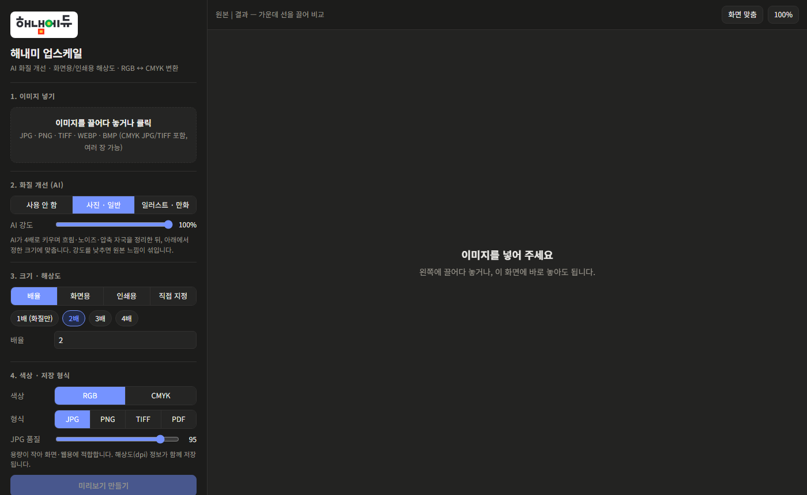

해내미 업스케일 사용설명서
이미지를 AI로 선명하게 키우고, 화면용·인쇄용 크기와 RGB/CMYK로 저장하는 도구입니다. 설치도, 인터넷도 필요 없이 HTML 파일을 크롬으로 열면 바로 쓸 수 있습니다.

이렇게 쓰세요 (4단계)
- 이미지 넣기 — 왼쪽 상자(또는 오른쪽 화면)에 이미지를 끌어다 놓습니다. 여러 장도 한 번에 됩니다.
- 화질 개선 고르기 — 사진은 사진·일반, 그림·만화는 일러스트·만화. 크기만 바꿀 땐 사용 안 함.
- 크기 정하기 — 아래 표에서 용도에 맞는 탭을 고릅니다.
- 미리보기 만들기 → 저장 — 결과를 확인하고 이 파일 저장, 여러 장이면 전체 저장(ZIP).
크기 · 해상도
| 탭 | 언제 쓰나요 |
|---|
| 배율 | 1·2·3·4배로 키웁니다. 1배는 크기 그대로 화질만 개선. |
| 화면용 | 웹·모니터·발표 자료. 자동(최대 크기) 또는 긴 변 1280~3840px 선택, 72dpi 저장. |
| 인쇄용 | 책·인쇄물. 300/350/600dpi 선택 후 자동 또는 판형(A4, 신국판, 크라운판 등)에 맞춤. 도련 포함 가능. |
| 직접 지정 | 가로·세로를 px, mm, %로 직접 입력. |
색상 · 저장 형식
- RGB: 화면·웹용. CMYK: 인쇄소 납품용 (Japan Color 2001 Coated 등 선택, 인쇄소 ICC 파일도 불러올 수 있음).
- JPG 용량 작음 · PNG 투명 배경 유지 · TIFF / PDF 인쇄용(CMYK 가능).
TIP 미리보기 화면의 가운데 선을 좌우로 끌면 원본과 결과를 비교할 수 있습니다. 휠로 확대, 100% 버튼으로 실제 크기 확인.
참고 인터넷 없이도 모든 기능이 작동합니다(HTML 파일 하나만 옮기면 됨). 이미지는 내 컴퓨터 안에서만 처리되며 외부로 전송되지 않습니다. 큰 이미지는 처리에 시간이 걸릴 수 있어요(취소 가능).